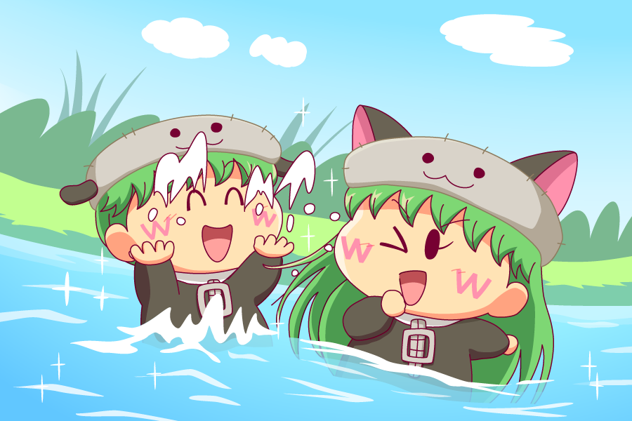

センリ「アンリ～、えいっ！」
アンリ「きゃっ、いきなり水をかけるなんてひどいわ、センリ」
センリ「アンリがぼーっとしているからだよ。ボクたちも村を守るためにもっと強くならなきゃ」
アンリ「なんだかセンリがお兄ちゃんに見えてきたわ」
センリ「ボクはアンリの弟だよ～」
水を描く練習がしたくなり、水遊びに向いていそうなアンリとセンリを久々に描きました。
水の描き方もいろいろあって、透明度を高く描く方法や、（現実にはない色だけど）水色や青をふんだんに使って水を表現する方法などがありますが、妖精とセットで描くなら鮮やかな配色になる後者の方が合っているかなぁと私は勝手に思っていたり。ちなみに水色とは私たちがふだん頭の中でイメージしている水の色で、もしかすると違う国や文化だと水色が表す色は違うのかもしれません（太陽の色が国によっては赤だったり黄色だったりするように）。
さてアンセンの会話ですが、いつもは姉の陰に隠れがちな弟の方を目立たせてみました。アンセンのモデルとなった篠塚ひろむ先生の『ちぇんじ！』でも、姉思いの弟が描かれていましたっけ。この二人が再び試練に立たされたとき、今度は二人の性格の違いが少しづつ現れるのかもしれませんね。私はそんな展開をひそかに期待してます^^。
(2017/9/17)